Sparse Autoencoder · 소수의 활성 특징을 통한 입력 표현과 복원

- x, y이미지·텍스트 임베딩의 SAE 입력
- σ, z̃비선형 활성화 함수 σ를 통한 소수 특징의 활성값 z̃ 생성
- x̃, ỹ활성값으로 가중한 특징 방향의 합을 통한 입력 복원
- Modality Split동일 개념이 이미지와 텍스트에서 서로 다른 SAE 좌표로 분리되어 활성화되는 현상
CONTENTS
다대다 대응의 필요성과 해석·정렬의 목표를 정리합니다.
방법별 검색 성능과 사용하는 activation 수에 따른 변화를 비교합니다.
개념을 통한 대응 구조와 학습 목적에 따른 결과를 살펴봅니다.
해석 가능한 대응과 정렬 성능을 함께 개선할 방향을 정리합니다.
RECAP
Sparse Autoencoder · 소수의 활성 특징을 통한 입력 표현과 복원
RECAP
학습 단계이미지 SAE와 텍스트 SAE의 독립 학습
학습 이후활성값의 coactivation correlation를 이용한 학습 후 대응

Coactivation correlation · 짝지어진 이미지·텍스트에서 두 특징의 활성값 간 상관계수
RELATED WORK
RESEARCH QUESTIONS
활성값의 상관관계(coactivation correlation)가 실제 의미 대응을 정확히 반영하지 못하는 경우는 언제이며, 이를 어떻게 개선할 수 있을까?
같은 개념을 나타내는 이미지·텍스트 특징의 관계를 1 대 1로 표현하기 어려운 경우*는 언제이며, 이를 어떤 대응 방식으로 해결할 수 있을까?
* 한 개념이 여러 특징에 나뉘거나(feature splitting), 여러 개념이 한 특징을 공유하는(feature merging) 경우
RECAP · 2026-09-30 미팅
다만 개념 구별 성능의 개선이 모달리티 간 대응 정확도의 개선으로 이어지는지는 미확인
2026-10-06 진행 상황 공유 · Method Requirements
여러 activation이 하나의 개념을 나타내거나,
하나의 activation이 여러 개념에 관여하는 관계를 표현합니다.
대응 행렬 를 이용해 비교했을 때, 같은 의미의 이미지와 텍스트 activation이 같은 위치의 좌표를 활성화해야 합니다 (정답 이미지·텍스트 쌍의 유사도가 높아야 함)
2026-10-06 진행 상황 공유 · 2. 정렬 · Baselines
대응 행렬 를 이용해 비교했을 때, 정답 이미지·텍스트 쌍의 유사도가 다른 쌍보다 높아지도록 합니다.
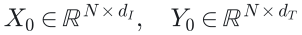
같은 행은 같은 이미지·캡션 쌍입니다.
은 쌍의 수,
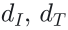
는 양쪽 activation 좌표 수입니다.각 좌표의 전체 개 표본 평균을 뺀 뒤,
같은 좌표의 표준편차로 나눕니다.
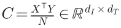
는 표준화한 행렬입니다.
는 이미지·텍스트 activation 좌표 사이의 coactivation correlation입니다.
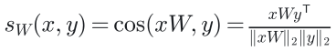
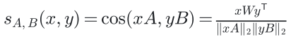
는 표준화한 activation, 는 공통 좌표로 조합하는 행렬입니다.
칸의 진하기는 값의 크기를 나타냅니다. 붉은색은 양수, 푸른색은 음수입니다.
2026-10-06 진행 상황 공유 · Baselines
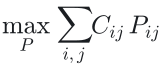
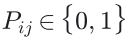
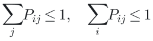
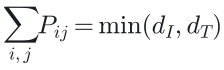
=이며, 1은 연결된
activation 좌표 쌍을 나타냅니다.
선택한 activation 좌표 쌍들의 coactivation correlation 합을 최대화합니다.
한 activation 좌표는 상대 좌표와 최대 하나만 연결합니다. 좌표 수가 적은 쪽은 모두 연결합니다.
함께 변하는 원래 좌표끼리 짝지으면, 정답 쌍의 변환 후 평균 내적이 커집니다.
좌표별로 표준화했을 때, 상관계수에 연결 가중치를 곱해 더한 값이 이 평균 내적과 같기 때문입니다.
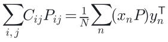
2026-10-06 진행 상황 공유 · Baselines
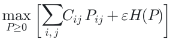
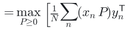
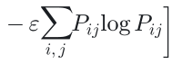
coactivation correlation이 높은 좌표 쌍에 큰 가중치를 배정하면서, 가중치의 과도한 집중을 완화합니다.
가중치는 음수가 아니며, 각 행·열의 총가중치를 고정합니다.
상관계수에 연결 가중치를 곱해 더한 값은 정답 쌍의 변환 후 평균 내적과 같습니다.
2026-10-06 진행 상황 공유 · Baselines
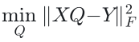
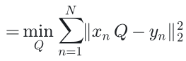
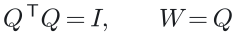
변환한 이미지 activation과 대응하는 텍스트 activation 사이의 L2 거리의 제곱을 모든 쌍에 대해 더한 값을 최소화합니다.
길이와 각도를 보존하는 회전·반사만 허용합니다.
가 길이를 보존하므로, 정답 쌍의 거리를 줄이면 내적이 커집니다.
2026-10-06 진행 상황 공유 · Baselines
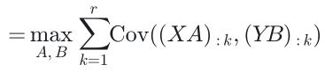
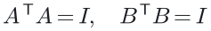
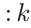
는 전체 표본의 번째 조합 값입니다.와 를 구해, 같은 번호의 개 조합 사이 공분산의 합을 최대화합니다.
가중치 열의 길이는 1이고, 서로 다른 열의 내적은 0입니다.
평균을 뺀 activation에서는 공분산의 합이 정답 쌍의 평균 내적과 같습니다.
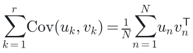
는 번째 정답 쌍의 조합 벡터입니다.
2026-10-06 진행 상황 공유 · Baselines
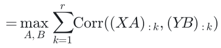
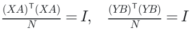
와 를 구해, 같은 번호의 개 조합 사이 상관계수의 합을 최대화합니다.
출력 분산은 1이고, 같은 모달리티의 서로 다른 조합 사이 상관은 0입니다.
각 조합의 평균이 0, 분산이 1이므로 상관계수의 합이 정답 쌍의 평균 내적과 같습니다.
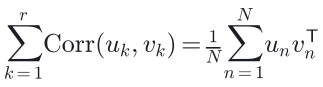
는 번째 정답 쌍의 조합 벡터입니다.
2026-10-06 진행 상황 공유 · Experimental Setup
일반적인 검색은 이미지·텍스트 임베딩의 유사도를 비교 · 이번 실험은 SAE의 희소 activation을 표준화하고 대응시킨 뒤 유사도로 검색
학습 쌍의 SAE activation을 추출·표준화한 뒤 또는 양쪽 조합 행렬 학습
SAE와 대응 행렬을 고정하고 평가 이미지·캡션의 유사도 계산
는 표준화한 activation, 는 공통 좌표로 조합하는 행렬
이미지로 텍스트 검색과 텍스트로 이미지 검색을 모두 평가

정답 캡션
Closeup of a brown bear sitting in a grassy area.
같은 이미지에 연결된 캡션은 모두 정답
정답이 3위라면 Recall@1은 실패, Recall@5·10은 성공
2026-10-06 진행 상황 공유 · Baselines
| 방법 | 이미지로 텍스트 검색 | 텍스트로 이미지 검색 | ||||
|---|---|---|---|---|---|---|
| R@1 | R@5 | R@10 | R@1 | R@5 | R@10 | |
| 헝가리안 | 8.42 | 20.18 | 27.88 | 4.79 | 14.22 | 21.38 |
| Sinkhorn텍스트 변환 | 13.60 | 30.66 | 41.62 | 4.95 | 15.37 | 24.38 |
| Sinkhorn이미지 변환 | 8.70 | 21.38 | 29.98 | 9.25 | 24.62 | 34.60 |
| Procrustes | 15.30 | 34.82 | 45.84 | 9.21 | 25.16 | 36.20 |
| PLS-SVD | 17.20 | 37.46 | 49.36 | 11.83 | 29.91 | 41.24 |
| CCA | 17.88 | 38.96 | 49.76 | 11.83 | 29.58 | 40.74 |
| 방법 | 이미지로 텍스트 검색 | 텍스트로 이미지 검색 | ||||
|---|---|---|---|---|---|---|
| R@1 | R@5 | R@10 | R@1 | R@5 | R@10 | |
| 헝가리안 | 10.74 | 25.48 | 35.18 | 7.11 | 19.41 | 28.41 |
| Sinkhorn텍스트 변환 | 16.04 | 34.64 | 45.22 | 6.02 | 17.63 | 26.81 |
| Sinkhorn이미지 변환 | 9.04 | 22.28 | 30.88 | 10.88 | 26.19 | 35.94 |
| Procrustes | 18.50 | 38.80 | 50.28 | 11.74 | 27.99 | 38.70 |
| PLS-SVD | 20.54 | 41.16 | 51.78 | 14.24 | 31.48 | 42.03 |
| CCA | 17.52 | 36.34 | 47.22 | 11.85 | 26.57 | 35.96 |
| 방법 | 이미지로 텍스트 검색 | 텍스트로 이미지 검색 | ||||
|---|---|---|---|---|---|---|
| R@1 | R@5 | R@10 | R@1 | R@5 | R@10 | |
| 헝가리안 | 7.82 | 21.26 | 30.50 | 5.97 | 18.48 | 27.75 |
| Sinkhorn텍스트 변환 | 20.80 | 43.24 | 54.68 | 6.42 | 19.20 | 29.50 |
| Sinkhorn이미지 변환 | 8.68 | 22.84 | 33.10 | 14.84 | 34.73 | 46.35 |
| Procrustes | 19.42 | 42.32 | 55.62 | 14.06 | 34.18 | 46.14 |
| PLS-SVD | 26.04 | 49.24 | 62.08 | 18.33 | 40.06 | 52.50 |
| CCA | 26.36 | 50.64 | 61.28 | 18.24 | 39.89 | 52.41 |
공분산을 최대화하는 PLS-SVD는 세 조건 모두 헝가리안·Sinkhorn·Procrustes보다 양방향 검색 성능이 높음
CCA도 대체로 높지만, SAE와 대응을 모두 CC3M으로 학습한 조건에서는 Procrustes보다 낮은 항목이 있음
2026-10-06 진행 상황 공유 · 해석을 위한 희소 대응
어떤 이미지 activation이 어떤 텍스트 activation에 연결되는지 개별 연결을 확인하기 쉬운 구조
여러 activation을 함께 활용할 수 있지만, 참여하는 activation이 많아질수록 대응의 의미를 설명하기 어려운 구조
일대일 제약을 완화하면서도, 대응에 참여하는 activation을 하나씩 확인할 수 있도록 희소성(sparsity)을 부여
2026-10-06 진행 상황 공유 · 해석을 위한 희소 대응
예를 들어, 이미지와 텍스트에서 각각 activation 2개만 골라 가중합으로 조합하고, 정답 쌍에서 두 조합의 상관계수가 높아지도록 학습
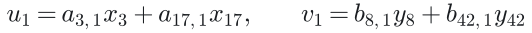
이미지의 3·17번 activation과 텍스트의 8·42번 activation을 고른 예시. 고른 activation과 가중치는 모든 표본에 동일하게 적용
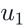
과 이 모두 같은 개념에 반응한다면, 은 그 개념의 이미지 표현, 은 그 개념의 텍스트 표현으로 해석 가능어떤 activation을 고르고 얼마나 반영할지는 학습으로 결정하며, 두 조합이 같은 개념을 나타내는지는 별도로 검증
2026-10-06 진행 상황 공유 · 해석을 위한 희소 대응
| 방법 | 희소하게 만드는 대상 | 해석할 수 있는 대응 |
|---|---|---|
| ✓ Sparse CCA [1] | 양쪽 조합 행렬 의 각 열에서 사용하는 activation 수 제한 | 소수의 이미지 activation 집합과 소수의 텍스트 activation 집합의 대응 |
| ✓ Sparse PLS-SVD [2] | 양쪽 조합 행렬 의 각 열에서 사용하는 activation 수 제한 | 같은 형태의 집합 쌍을 구성하되, 상관계수 대신 공분산을 높이는 대응 |
| ✓ 희소 최적 수송 [3, 4] | 연결 행렬 에서 0이 아닌 연결 수 제한 | 원래 이미지 activation 하나에 연결된 소수의 텍스트 activation을 확인 |
| ✕ 희소한 Procrustes 대응희소성과 직교성을 함께 만족하도록 최적화하기 어려움 | 직교행렬 에서 0이 아닌 계수 수 제한 | 소수의 이미지 activation 조합과 원래 텍스트 activation 하나의 대응 |
✓ 기존 희소 방법 있음 ✕ 단순한 계수 제거로 구현하기 어려움. 희소 최적 수송은 기본 Sinkhorn의 정규화 또는 제약을 변경
2026-10-06 진행 상황 공유 · Baselines
| 방법 | 이미지로 텍스트 검색 | 텍스트로 이미지 검색 | ||||
|---|---|---|---|---|---|---|
| R@1 | R@5 | R@10 | R@1 | R@5 | R@10 | |
| 헝가리안 | 8.42 | 20.18 | 27.88 | 4.79 | 14.22 | 21.38 |
| Sinkhorn텍스트 변환 | 13.60 | 30.66 | 41.62 | 4.95 | 15.37 | 24.38 |
| Sparse Sinkhorn텍스트 변환 · 16개 | 11.42 | 27.30 | 37.00 | 5.73 | 18.39 | 28.06 |
| Sinkhorn이미지 변환 | 8.70 | 21.38 | 29.98 | 9.25 | 24.62 | 34.60 |
| Sparse Sinkhorn이미지 변환 · 16개 | 11.72 | 26.64 | 36.36 | 8.97 | 23.97 | 33.69 |
| Procrustes | 15.30 | 34.82 | 45.84 | 9.21 | 25.16 | 36.20 |
| PLS-SVD | 17.20 | 37.46 | 49.36 | 11.83 | 29.91 | 41.24 |
| Sparse PLS-SVD조합당 16개 | 14.88 | 33.08 | 44.66 | 10.13 | 27.39 | 38.95 |
| CCA | 17.88 | 38.96 | 49.76 | 11.83 | 29.58 | 40.74 |
| Sparse CCA조합당 16개 | 16.12 | 35.52 | 46.90 | 10.55 | 27.53 | 38.43 |
| 방법 | 이미지로 텍스트 검색 | 텍스트로 이미지 검색 | ||||
|---|---|---|---|---|---|---|
| R@1 | R@5 | R@10 | R@1 | R@5 | R@10 | |
| 헝가리안 | 10.74 | 25.48 | 35.18 | 7.11 | 19.41 | 28.41 |
| Sinkhorn텍스트 변환 | 16.04 | 34.64 | 45.22 | 6.02 | 17.63 | 26.81 |
| Sparse Sinkhorn텍스트 변환 · 16개 | 17.20 | 35.14 | 46.44 | 9.13 | 23.19 | 33.44 |
| Sinkhorn이미지 변환 | 9.04 | 22.28 | 30.88 | 10.88 | 26.19 | 35.94 |
| Sparse Sinkhorn이미지 변환 · 16개 | 13.88 | 31.14 | 41.32 | 11.16 | 26.71 | 36.98 |
| Procrustes | 18.50 | 38.80 | 50.28 | 11.74 | 27.99 | 38.70 |
| PLS-SVD | 20.54 | 41.16 | 51.78 | 14.24 | 31.48 | 42.03 |
| Sparse PLS-SVD조합당 16개 | 11.10 | 26.28 | 36.34 | 8.77 | 21.21 | 29.94 |
| CCA | 17.52 | 36.34 | 47.22 | 11.85 | 26.57 | 35.96 |
| Sparse CCA조합당 16개 | 10.76 | 23.86 | 32.06 | 7.23 | 18.27 | 26.15 |
| 방법 | 이미지로 텍스트 검색 | 텍스트로 이미지 검색 | ||||
|---|---|---|---|---|---|---|
| R@1 | R@5 | R@10 | R@1 | R@5 | R@10 | |
| 헝가리안 | 7.82 | 21.26 | 30.50 | 5.97 | 18.48 | 27.75 |
| Sinkhorn텍스트 변환 | 20.80 | 43.24 | 54.68 | 6.42 | 19.20 | 29.50 |
| Sparse Sinkhorn텍스트 변환 · 16개 | 16.40 | 35.16 | 47.02 | 9.41 | 25.70 | 37.06 |
| Sinkhorn이미지 변환 | 8.68 | 22.84 | 33.10 | 14.84 | 34.73 | 46.35 |
| Sparse Sinkhorn이미지 변환 · 16개 | 13.18 | 31.62 | 43.48 | 11.74 | 29.28 | 40.42 |
| Procrustes | 19.42 | 42.32 | 55.62 | 14.06 | 34.18 | 46.14 |
| PLS-SVD | 26.04 | 49.24 | 62.08 | 18.33 | 40.06 | 52.50 |
| Sparse PLS-SVD조합당 16개 | 13.82 | 31.64 | 42.42 | 10.27 | 26.83 | 38.15 |
| CCA | 26.36 | 50.64 | 61.28 | 18.24 | 39.89 | 52.41 |
| Sparse CCA조합당 16개 | 18.98 | 38.78 | 49.82 | 12.87 | 30.92 | 42.53 |
2026-10-06 진행 상황 공유 · Baselines
위 · 이미지로 텍스트 검색 아래 · 텍스트로 이미지 검색 · 공통 좌표는 256개로 고정
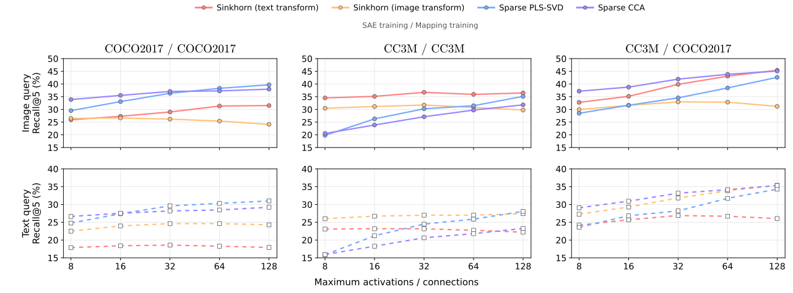
희소 조건 k를 변화시키며 성능을 비교했을 때, 전반적으로 어느 한 방식이 가장 좋다고 말하기는 어려움
Sparse PLS-SVD·CCA는 조합당 activation 수, Sinkhorn은 각 좌표에 남기는 최대 연결 수를 변경METHOD IDEA · 해석과 정렬
해석과 정렬을 함께 개선하려는 목적에, 기존 Baselines의 최적화 목적함수가 가장 적합할까?
검토할 아이디어 · 세 행렬로 분해하는 것만으로 해석과 정렬이 보장되지는 않기 때문에 학습 목표를 잘 정의할 필요가 있음
DATASET

사람 · 자전거 · 자동차 · 기차 · 개
고양이 · 곰 · 스키 · 서핑보드 · 의자
잔디 · 눈 · 바다 · 모래 · 흙
자갈 · 진흙 · 나무 · 구름 · 나무 바닥
ORACLE MAPPING · COCO-Stuff 주석 활용
개념의 정답 주석을 알고 있다면, activation과 개념을 연결하는 세 행렬 구조를 어떻게 구성할 수 있을까?
재학습한 손실이 가장 작은 좌표를 하나씩 추가 (k=16)
S는 선택한 좌표 집합, c는 개념, j*는 이번에 추가할 좌표
이미지·텍스트 각각에서 예측 제곱오차와 가중치 크기 최소화
Z는 activation 행렬, t는 0·1 주석, w·b는 가중치·절편
N은 학습 표본 수, 1은 모든 원소가 1인 벡터, λ=0.01
양쪽 개념 순서를 맞춰 눈은 눈, 스키는 스키와 연결
각 행은 원래 activation 좌표, 각 열은 개념 하나에 해당. 전체 activation 수 × 171 행렬에서 열마다 최대 k개 가중치만 사용
이미지와 텍스트를 각각 171개 개념 점수로 변환하고 코사인 유사도로 비교. 검색에는 평가 주석을 사용하지 않음
2026-10-06 진행 상황 공유 · Baselines
| 방법 | 이미지로 텍스트 검색 | 텍스트로 이미지 검색 | ||||
|---|---|---|---|---|---|---|
| R@1 | R@5 | R@10 | R@1 | R@5 | R@10 | |
| 헝가리안일대일 대응 | 8.42 | 20.18 | 27.88 | 4.79 | 14.22 | 21.38 |
| Sparse Sinkhorn텍스트 변환 · 연결 최대 16개 | 11.42 | 27.30 | 37.00 | 5.73 | 18.39 | 28.06 |
| Sparse Sinkhorn이미지 변환 · 연결 최대 16개 | 11.72 | 26.64 | 36.36 | 8.97 | 23.97 | 33.69 |
| Sparse PLS-SVD공통 좌표 256개 · 조합당 최대 16개 | 14.88 | 33.08 | 44.66 | 10.13 | 27.39 | 38.95 |
| Sparse CCA공통 좌표 256개 · 조합당 최대 16개 | 16.12 | 35.52 | 46.90 | 10.55 | 27.53 | 38.43 |
| Sparse CCA공통 좌표 171개 · 조합당 최대 16개 | 15.34 | 34.50 | 45.62 | 10.69 | 27.09 | 37.96 |
| Oracle 매핑개념 좌표 171개 · 개념당 최대 16개 | 9.42 | 24.64 | 34.08 | 6.60 | 19.50 | 29.02 |
| 방법 | 이미지로 텍스트 검색 | 텍스트로 이미지 검색 | ||||
|---|---|---|---|---|---|---|
| R@1 | R@5 | R@10 | R@1 | R@5 | R@10 | |
| 헝가리안일대일 대응 | 7.82 | 21.26 | 30.50 | 5.97 | 18.48 | 27.75 |
| Sparse Sinkhorn텍스트 변환 · 연결 최대 16개 | 16.40 | 35.16 | 47.02 | 9.41 | 25.70 | 37.06 |
| Sparse Sinkhorn이미지 변환 · 연결 최대 16개 | 13.18 | 31.62 | 43.48 | 11.74 | 29.28 | 40.42 |
| Sparse PLS-SVD공통 좌표 256개 · 조합당 최대 16개 | 13.82 | 31.64 | 42.42 | 10.27 | 26.83 | 38.15 |
| Sparse CCA공통 좌표 256개 · 조합당 최대 16개 | 18.98 | 38.78 | 49.82 | 12.87 | 30.92 | 42.53 |
| Sparse CCA공통 좌표 171개 · 조합당 최대 16개 | 16.10 | 36.22 | 47.70 | 12.04 | 28.30 | 39.53 |
| Oracle 매핑개념 좌표 171개 · 개념당 최대 16개 | 12.22 | 30.16 | 40.56 | 8.47 | 22.92 | 32.94 |
ORACLE MAPPING · 학습 목적 비교
Ridge에서 시작해 개념당 최대 16개 activation의 선택과 가중치를 재최적화하고, 가중치 크기 규제 λ=0·0.01을 비교
| 학습 목적 | 이미지로 텍스트 검색 | 텍스트로 이미지 검색 | ||||
|---|---|---|---|---|---|---|
| R@1 | R@5 | R@10 | R@1 | R@5 | R@10 | |
| Ridge (MSE)λ=0.01 | 9.42 | 24.64 | 34.08 | 6.60 | 19.50 | 29.02 |
| MSEλ=0 | 9.44 | 24.50 | 34.04 | 6.62 | 19.46 | 29.02 |
| Binary CEλ=0.01 | 9.34 | 24.06 | 33.42 | 6.90 | 19.55 | 29.19 |
| Binary CEλ=0 | 9.32 | 23.40 | 32.74 | 6.62 | 19.37 | 28.67 |
| CEλ=0.01 | 8.88 | 23.84 | 33.12 | 6.50 | 19.35 | 28.67 |
| CEλ=0 | 7.86 | 20.54 | 29.34 | 5.20 | 16.34 | 24.87 |
| 학습 목적 | 이미지로 텍스트 검색 | 텍스트로 이미지 검색 | ||||
|---|---|---|---|---|---|---|
| R@1 | R@5 | R@10 | R@1 | R@5 | R@10 | |
| Ridge (MSE)λ=0.01 | 12.22 | 30.16 | 40.56 | 8.47 | 22.92 | 32.94 |
| MSEλ=0 | 12.16 | 30.24 | 40.52 | 8.42 | 22.90 | 32.91 |
| Binary CEλ=0.01 | 12.34 | 29.28 | 40.06 | 8.11 | 22.23 | 32.19 |
| Binary CEλ=0 | 11.50 | 27.92 | 38.40 | 7.74 | 21.52 | 31.47 |
| CEλ=0.01 | 12.20 | 29.34 | 40.08 | 7.73 | 21.69 | 31.93 |
| CEλ=0 | 9.58 | 24.92 | 35.06 | 5.84 | 17.82 | 27.00 |
TAKE AWAY · 다음 연구 질문
Soft 방식으로 개념의 의미를 직접 고려하지 않고 정렬을 최적화했을 때, 헝가리안보다 높은 검색 성능을 얻을 수 있음을 확인했음. 희소화하여 사용하는 activation이나 연결 수를 줄인 뒤에도 상당한 검색 성능을 유지했음
W를 A·P·Bᵀ로 나누어 activation 집합과 개념, 개념 간 대응을 구분해 표현했음. Oracle로 정렬을 직접 유도하지 않고 annotated concept을 예측하도록 학습했을 때도, 헝가리안보다 높은 검색 성능을 얻을 수 있음을 확인했음
두 방식의 장점을 결합해 해석 가능한 개념 대응과 정렬 성능을 함께 확보하려면 어떻게 학습해야 할까? 특히 주석 없이 activation과 개념을 연결하는 행렬을 추정하고, 양쪽 개념의 의미 대응을 유도할 수 있을까?